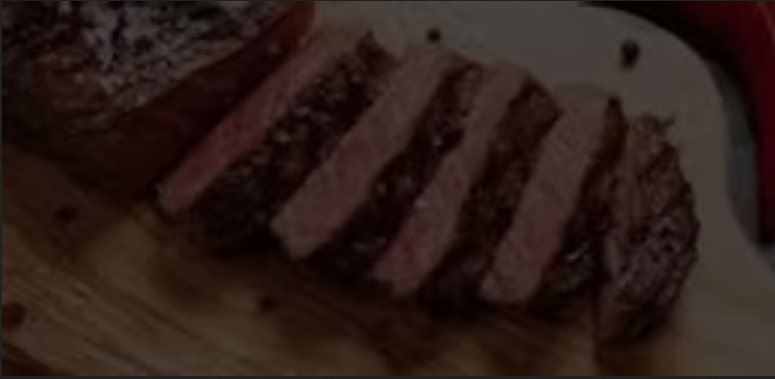
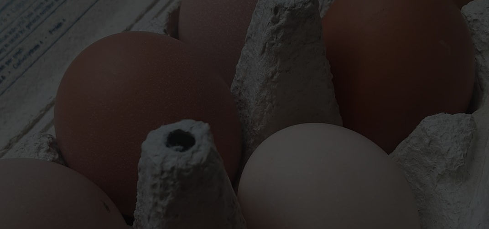
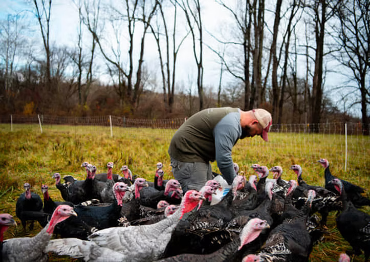
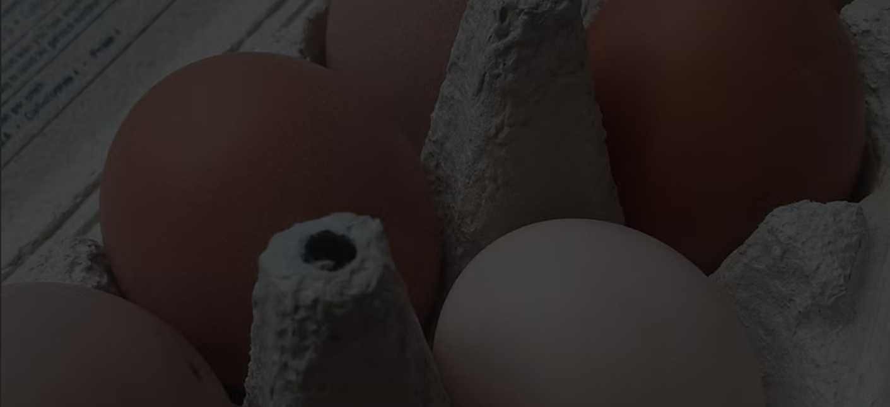
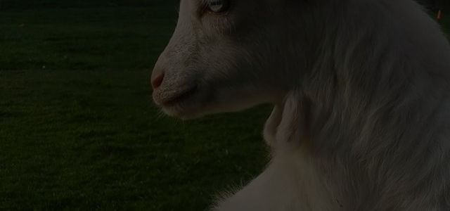
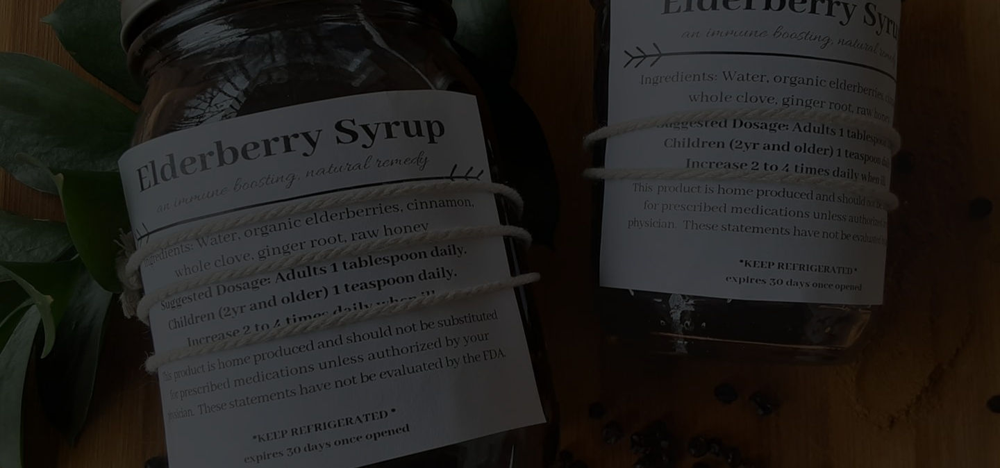

Farm Market
Meat
Beef, pork, turkey, and more—availability varies.
Self-serve · 7 days
The Farm Market is open 7 days a week, 9am–dusk, self-pay (cash or Venmo). Inside you’ll find eggs, pork, turkey, seasonal produce, honey, elderberry syrup, artisan jams, tinctures, salves, and homemade décor.


Farm Market
Beef, pork, turkey, and more—availability varies.

Farm Life
Eggs, seasonal produce, and handmade goods.

Farm Market
Stop in, self-pay, and take home something fresh.
Inside the Farm Market you will find eggs, pork, turkey, seasonal produce, honey, elderberry syrup, artisan jams, tinctures, salves and homemade décor.
We are self-pay, cash or Venmo.
Open 9am-dusk 7 days a week.
Our pasture raised/grass fed beef is available al a carte in our Farm Market. Pork will be available Summer 2026. Taste the difference from our sustainably raised and well loved beef. Raised right here in your Cuyahoga Valley National Park.

Beef and pork are processed at Andover (USDA). Beef is sold by hanging weight; pork by the whole. Cuts may be available al a carte in the market.
Taste the difference from sustainably raised, well-loved beef—raised right here in Cuyahoga Valley National Park.

Burkeys in Zanesville processes our lamb. Lamb is sold by hanging weight; custom cut sheets available.
Our pasture program uses intensive grazing and long rest periods to keep forage healthy and animals thriving.